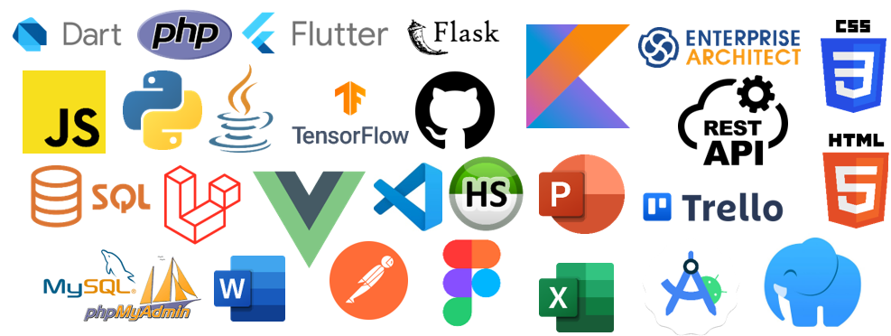
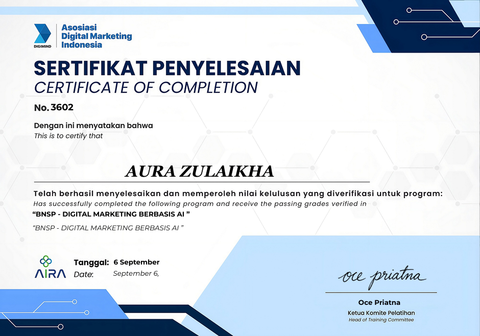
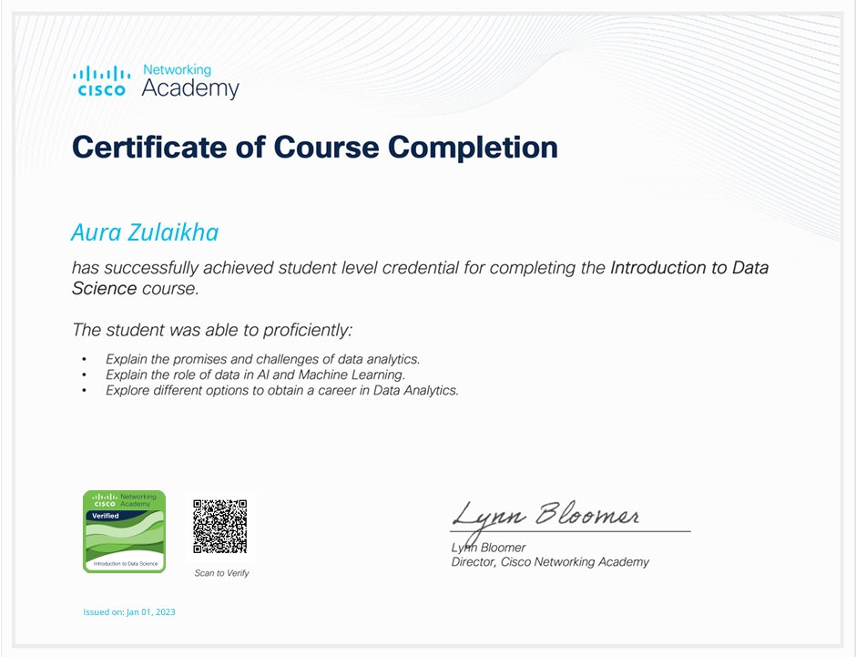
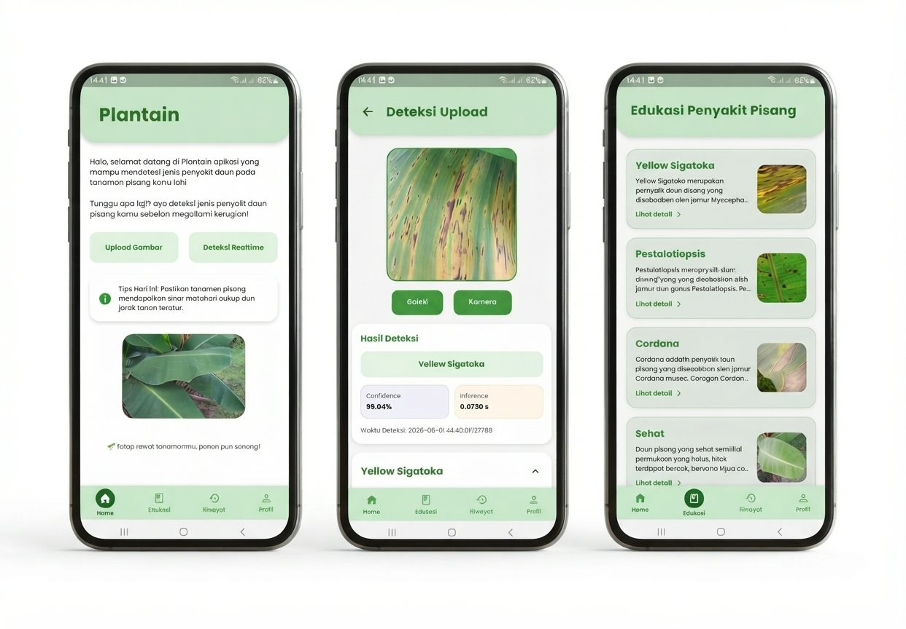
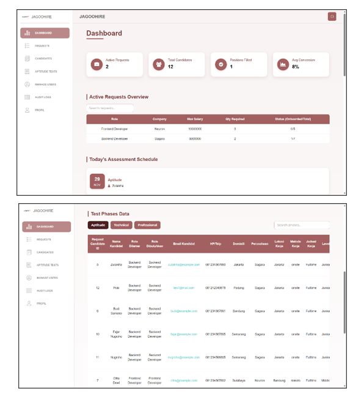
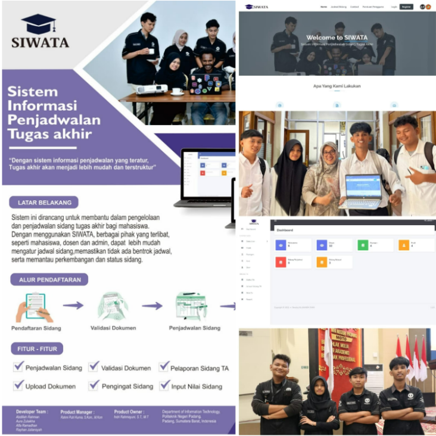
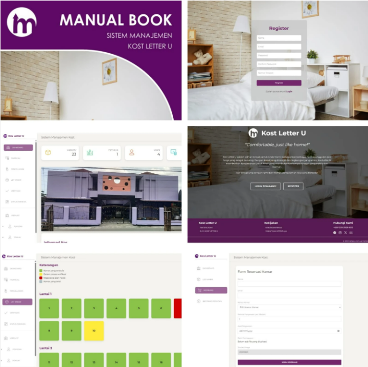
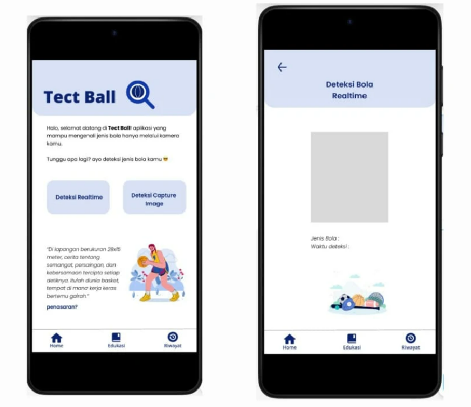
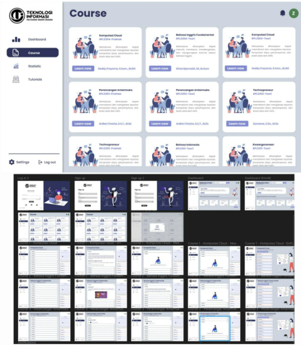

As a fresh graduate from Politeknik Negeri Padang majoring in Software Engineering Technology, I have a strong interest in mobile and web application development, Machine Learning, Artificial Intelligence, and Data and Information Processing. I have hands-on experience in building AI-powered mobile applications for image classification using Flutter, Python, TensorFlow, and Flask, supported by MySQL database management. Additionally, I am experienced in web development using Laravel and Vue.js, as well as VPS application deployment through internships and industrial training programs.
Teknologi Informasi / Teknologi Rekayasa Perangkat Lunak
Tugas Akhir : Optimasi Transfer Learning EfficientNet-B2 untuk Meningkatkan Akurasi Klasifikasi Penyakit Daun Pisang pada Platform Mobile.
Gambaran visual ekosistem teknologi yang biasa digunakan dalam proyek.

PT Jago Talenta Indonesia (JagooIT) - Kota Bandung, Jawa Barat
Berperan sebagai Full-Stack Developer Intern yang menggarap fitur frontend dan backend pada sistem manajemen seleksi kandidat. Proyek ini memodernisasi proses rekrutmen di perusahaan outsourcing agar pengelolaan ribuan data kandidat dan jadwal seleksi jadi lebih cepat dan teratur. Di samping tugas development, saya juga membantu pengujian kualitas aplikasi lewat UAT dan menyusun materi pelatihan internal mengenai DevOps.

Asosiasi Digital Marketing Indonesia (DIGIMIND) & AIRA
Menguasai strategi pemasaran digital berbasis kecerdasan buatan, riset tren pasar dengan SEMrush, Fastmoss, dan Google Trends, otomatisasi pembuatan konten menggunakan AI tools, serta pembuatan kampanye iklan melalui Google Ads.
Cisco Networking Academy
Mengikuti pelatihan Introduction to Internet of Things dari Cisco Networking Academy. Pelatihan ini membahas peran IoT dan transformasi digital dalam bisnis dan pemerintahan, pentingnya perangkat lunak dan data, manfaat otomatisasi serta Artificial Intelligence (AI), konsep Intent-Based Networking, serta pentingnya peningkatan keamanan di era digitalisasi.

Cisco Networking Academy
Mengikuti pelatihan Introduction to Data Science dari Cisco Networking Academy. Pelatihan ini membahas konsep dasar ilmu data, mencakup peluang dan tantangan dalam analisis data (data analytics), peran data dalam Kecerdasan Buatan (AI) dan Machine Learning, serta pemahaman jalur karier di bidang analisis data.
Cisco Networking Academy
Mengikuti pelatihan Introduction to Cybersecurity dari Cisco Networking Academy. Pelatihan ini membahas konsep dasar keamanan siber, identifikasi potensi ancaman dan kerentanan jaringan (network vulnerabilities), teknik deteksi ancaman (threat detection), serta prinsip perlindungan data dan privasi (privacy & data confidentiality) bagi individu maupun organisasi.
Amazon Web Services Training and Certification
Mengikuti program pelatihan AWS Academy Graduate - Cloud Developing selama 40 jam. Pelatihan ini mencakup pemahaman mendasar mengenai konsep cloud computing, pengembangan dan penyebaran (deployment) aplikasi menggunakan layanan Amazon Web Services (AWS), pengelolaan basis data cloud, serta penerapan praktik keamanan (security best practices) dalam arsitektur cloud.

Aplikasi Android berbasis Kecerdasan Buatan (AI) yang dirancang untuk mendeteksi jenis penyakit pada daun pisang secara akurat melalui gambar. Sistem ini dikembangkan memanfaatkan metode Transfer Learning dengan arsitektur EfficientNet-B2 yang dilatih menggunakan lebih dari 3.000 dataset gambar daun pisang, menghasilkan performa klasifikasi yang optimal dan responsif pada perangkat mobile.

Sistem manajemen rekrutmen talenta terintegrasi untuk PT Jago Talenta Indonesia (JagooIT). JAGOOHIRE hadir untuk mengoptimalkan efisiensi pemantauan proses seleksi kandidat secara terstruktur, transparan, dan sesuai dengan SOP perusahaan yang berlaku.

Sistem ini dirancang untuk memudahkan penjadwalan sidang tugas akhir mahasiswa dan untuk menghindari terjadinya jadwal yang bentrok, serta memudahkan pemantauan progres tugas akhir mahasiswa.

Sistem ini dibangun secara personal yang bertujuan untuk memudahkan pemilik kos melakukan pengelolaan kamar kost yang banyak. Sistem Manajemen Kost Letter U memilki design antarmuka yang menarik dan mudah dipahami oleh pengguna.

Membuat pemodelan untuk mendeteksi jenis bola olahraga yaitu bola basket, voli, dan kaki. Pemodelan menggunakan algoritma Convolutional Neural Network dan Transfer Learning, dengan jumlah dataset gambar seluruhnya kurang lebih 2000 dan menggunakan Tensorflow dalam membuat pemodelan. Pemodelan ini memiliki tingkat akurasi sebesar 90%.

Membuat perancangan antarmuka Sistem Pembelajaran Daring Teknologi Informasi (SPADATI) yang user friendly dan desain yang menarik.
Terbuka untuk kesempatan kerja, proyek kolaborasi, atau diskusi teknis.